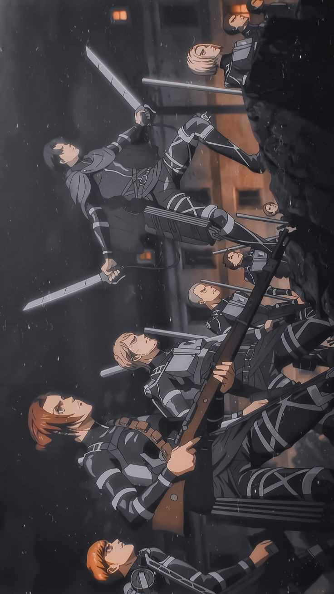
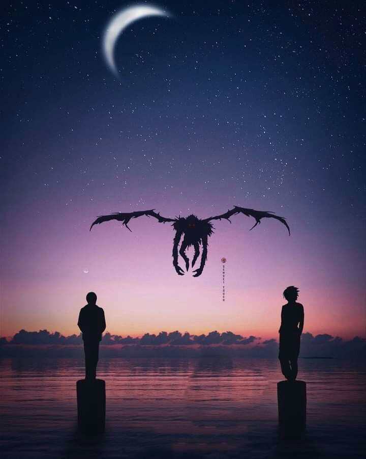
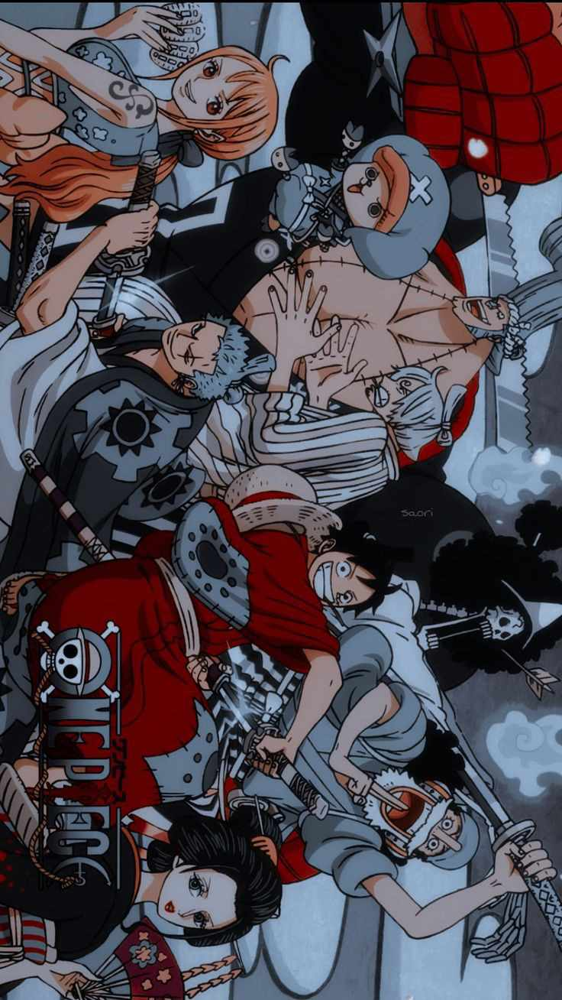
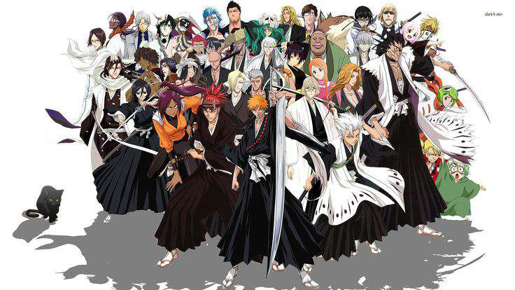
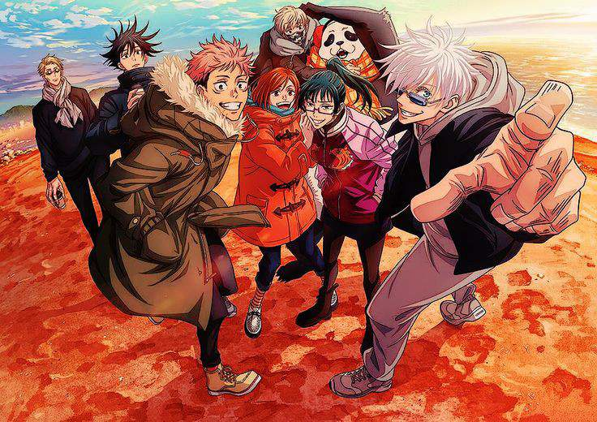

Naruto Uzumaki, a young ninja with a sealed demon within him, dreams of becoming the strongest ninja and leader of his village.

In a world where humanity resides within enormous walled cities to protect themselves from Titans, colossal humanoid creatures, Eren Yeager joins the fight against them.

Light Yagami finds a supernatural notebook that allows him to kill anyone whose name he writes in it, as he seeks to cleanse the world of crime.

Monkey D. Luffy sets sail with his crew to find the legendary treasure, One Piece, and become the Pirate King.

Ichigo Kurosaki gains the abilities of a Soul Reaper and is tasked with defending humans from evil spirits and guiding departed souls to the afterlife.

Yuji Itadori joins a secret organization of Jujutsu Sorcerers to combat cursed spirits and save the world from supernatural threats.